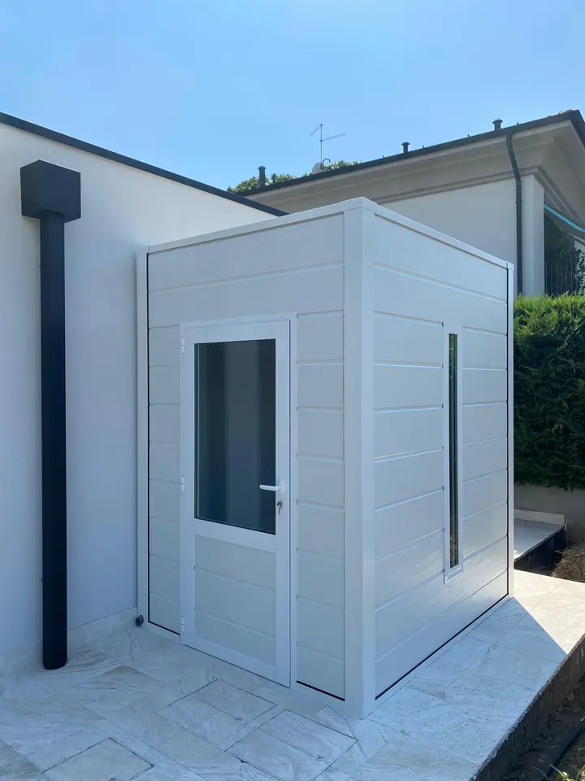
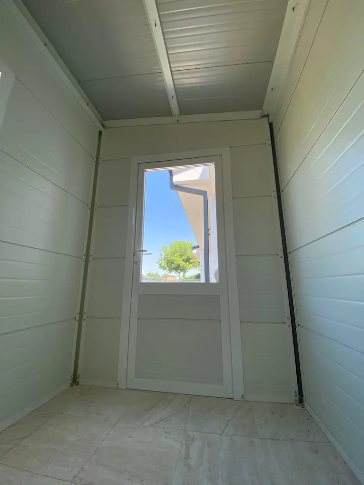
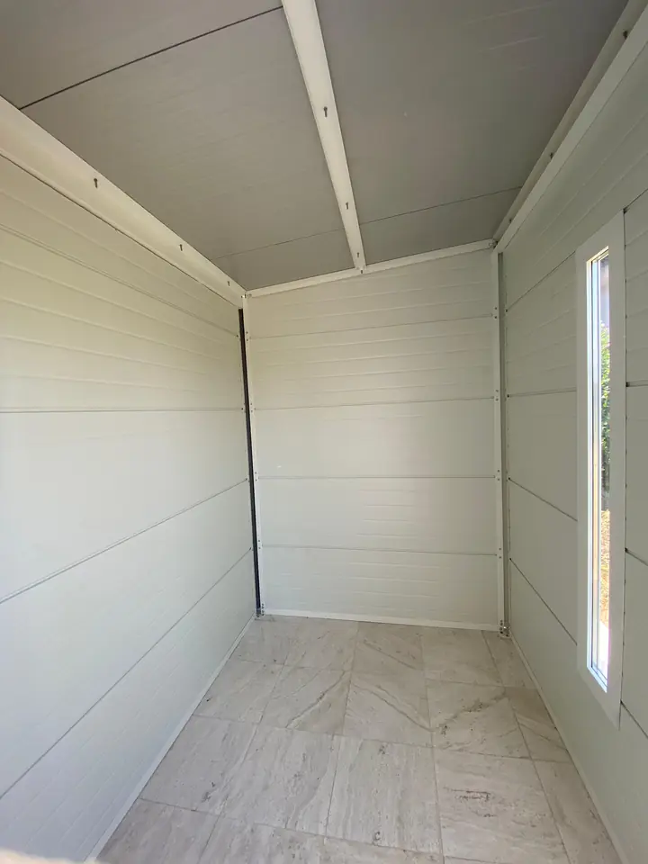

Galleria
Sally, dentro e fuori
Sally montata e fotografata in giardino: fuori, dentro e da lontano. Apri ogni foto per vederla a tutto schermo.
-

(apri ingrandimento)01 Esterno -

(apri ingrandimento)02 Interno con porta -

(apri ingrandimento)03 Interno completo -
(apri ingrandimento) 04 In giardino, da vicino -
(apri ingrandimento) 05 In giardino, vista larga


Foto reali di Sally montata in giardino. Prova i colori nel configuratore.